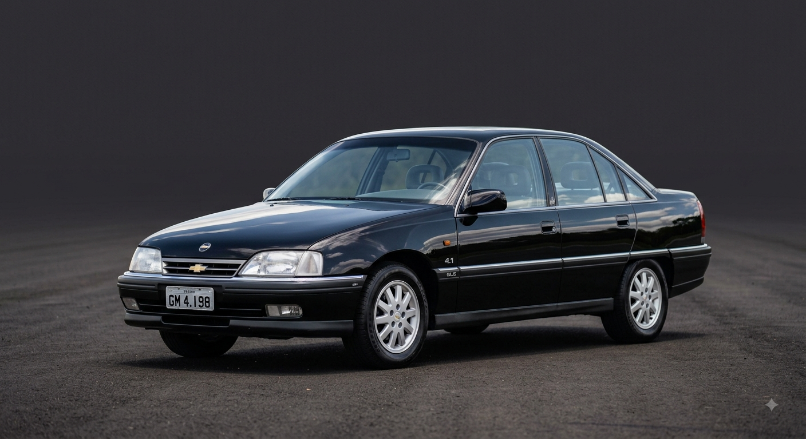

<!DOCTYPE html>
<html lang="pt-br"></html>
<head>
    <meta charset="UTF-8">
    <meta name="viewport" content="width=device-width, initial-scale=1.0">
    <title>Meu site</title>
        
        <style>
       header{

            background-color: rgb(236, 186, 94);
            color: black;
            text-align: center;
            max: width 800px;
            margin: 0 auto;
            border: 5px solid black;
            padding: 16px;
             
      }
      main{
        background-color: rgb(255, 255, 255);
        color: rgb(0, 0, 0);
         text-align: center;
            max: width 800px;
            margin: 0 auto;
            border: 5px solid black;
            padding: 16px;
            display: flex;

      }
      img{
        width: 350px;
        height: 200px;
      }
      .artigo-autor{
        font-weight: bold;
      }

        </style>
    </head>


    <body>
        <header>
            <h1>Legado do Omega ano 1998 4.1</h1>
            <p> Chevrolet Omega 4.1 1998</p>
        <header>

        <main>
            
            <div>

                <h2>O lendario Omega 4.1</h2>
                <p>Se você é fã de um dos carros mais icônicos, confortáveis e potentes da história da indústria automotiva brasileira, este lugar foi feito sob medida para você. O clássico motor 6 cilindros 4.1 litros marcou época e o modelo 1998 representa o auge de uma era inesquecível.</p>
                Chevrolet Omega 4.1 1998
            
            
                <p class="artigo-autor">Por: Carlos</p>
            </div>
        <main>
</body>
</html>